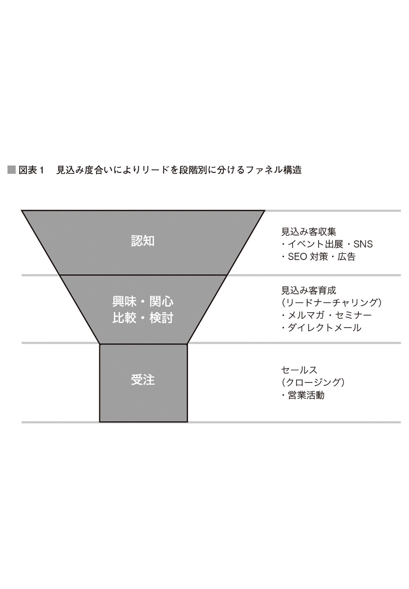

| インサイドセールス 究極の営業術＜第1巻＞――協創と自律性の高いこれからのインサイドセールス | |
| 水嶋 玲以仁 | |
| 株式会社 ダイヤモンド・ビジネス企画 (2018) | |
この本は縦書きでレイアウトされています。
また、ご覧になる機種により、表示の差が認められることがあります。
本作品を電子書籍版に収録するにあたり、一部の漢字が簡略体で表記されている場合があります。
本書の目的は、近年注目を集めている「インサイドセールス」成功のためのノウハウを読者の皆さんに伝授することです。
私はこれまで、グーグル、デル、マイクロソフトなど、外資系企業を中心にインサイドセールスの立ち上げ・運営に携わってきました。その年数は、20 年にわたります。
そもそも「インサイドセールス」を知らない人もいるかもしれません。
「インサイドセールス」とは、簡単に言えば従来の訪問型営業に対し、電話やメールといった手段を用い、訪問を必要としない営業のことです。もともとは、国土が広く、いちいち訪問などしていられないアメリカで生まれた営業手法でしたが、近年日本でも導入する企業が増えています。
訪問せずに成約できる、いわば「究極の営業術」ともいえるインサイドセールス ですが、日本企業ではまだまだその運営や人材の育成ができるマネージャーが少ないのが現状です。
そこで、 20 年の経験を基に、インサイドセールス組織の作り方や「つまずきのポイント」を、理論のみならず実践も含めて述べていきたいと思います。
本書は、Part１～Part３の３部構成になっています。理論から実践まで、本書さえ読めばインサイドセールスのすべてがわかるように、このような構成にしました。
まずPart１では、インサイドセールスの理論を紹介。インサイドセールスの役割と成功させるための運営手法を紹介していきます。
Part２では、Part１で紹介した理論を実際に取り入れた企業のインサイドセールスがどのように変わったかをドキュメンタリー形式で紹介していきます。今回取り上げるのは、私が実際に３カ月間インサイドセールスのコンサルティングをしたユーザベースという企業の事例です。
私が今回ユーザベースを事例として取り上げようと思ったのは、この企業風土にあります。Part１でインサイドセールスを成功させるためのポイントを紹介するのですが、ただ、いくら仕組みを取り入れても協創と自律性を重んじる組織づくりをしていかないと、なかなかインサイドセールスは機能しません。仕組みを取り入れるだけでは、抜本的な解決にはならない。 20 年の経験からこのことを痛いほどわかっているからこそ、組織風土も大事だということも伝えるべきだと思っているのです。
この協創と自律性を重んじる組織としてユーザベースがぴったりでした。Part２ではユーザベースの企業風土についても紹介していきますが、これがインサイドセールスで結果を出すためには欠かせない。実際に仕組みを取り入れてユーザベースのインサイドセールスチームがどのように変わったのかを紹介しつつ、仕組みだけではなく、その土台となる組織風土も重要だということを伝えるのが、このPart２の狙いです。
また、もちろん私が教えるノウハウだけがインサイドセールスのすべてではありません。そこで、Part３では、セールスフォース・ドットコム、マルケト、ベルフェイス、ＨＤＥなど、日本のインサイドセールスを牽引 する企業にもそのノウハウをお聞きしました。
読み通していただければ、きっと何かしらのヒントになるのではないかと期待しています。
なお、執筆にあたっては、さまざまな読者層を想定して、なるべく専門用語を使わず、平易な表現を使用するように努めました。また、本書の成立においては、多くの関係者にお世話になりました。ここにお礼を述べさせていただきたいと思います。
どうしてうまくいかない？
ウチのインサイドセールス
この章では、セールスシーンで今、インサイドセールスが注目される背景や、導入を試みてもうまくいかない理由などを考えていきます。
そもそもインサイドセールスとはどのようなものなのでしょう。「訪問しない営業のことでしょ？」と思った人も多いでしょう。確かに訪問しないインサイドセールスに対して、従来のようなお客さんの元を訪れて営業するセールスをフィールドセールスと呼びます。
インサイドセールスとは何か、まずは原則となる定義を言うと「主にＢto Ｂ営業のシーンにおいて、メールや電話を用いて顧客とコミュニケーションを図る手法。顧客の元へ訪問しないのが特徴」となります。
しかし「訪問しない」ということだけでは表しきれない役割を、インサイドセールスは担っています。そこで、インサイドセールスの本質をご理解いただくために、まずは「リード（Lead）」という用語を知っておいてほしいと思います。
「リード」とは「見込み客」のことを指すマーケティング用語で、まだ取引には至っていないが、今後受注する可能性のある営業先を言います。例えば、セミナーなどで名刺を獲得すれば、それは「リード」に当たり、「リード獲得」などと言います。
インサイドセールスをより深く知るためには、まずはこのリードを状況別に分類することが大切です。
リードと接点を持つきっかけはさまざまです。広告やセミナー、展示会での名刺交換、資料請求、架電などが考えられますが、商材を売る側からリードを見たとき、商材の関心度にはバラつきがあります。商材のことを知ったばかりで「ふーん」という程度の人もいれば、次の商談で成約に結び付くかもしれないという人までいます。
マーケティングでは、このリードの分散の様子を「ファネル構造」と呼びます（図表１）。ファネルとは、じょうごや漏斗 のこと。一般的な購買プロセスでは、商材のことを認知する入り口でのリードの数は多く、徐々に自社と商材とのマッチングを図ったり他社商材との比較検討を繰り返したりしながら、実際に購入するリードの数が絞り込まれていきます。その様子をファネルに見立てたのです。また、ファネルは「パイプライン」とも呼ばれ、この管理のことを「パイプライン管理」などとも言います。
特に、この入り口部分など見込み度の低いリードに働き掛けて、少しずつ受注に近づけていくことをマーケティングの分野では「リードを育てる」という考え方をします。そこで英語で「育てる」を意味する「ナーチャリング（Nurturing）」を用いて、「リードナーチャリング」と言ったりします。 インサイドセールスの役割を理解する上でとても大事な用語です。
さて、このファネル構造ですが、リードが入ってくる入り口の部分をマーケティングが担い、商談から受注（クロージング）に当たる細い管の部分を営業（フィールドセールス）が担うことは、何となく想像がつくでしょう。ではその間に当たる、管に向かって徐々に細くなるところは誰がケアをするのか？ そうです、この層のフォローに、インサイドセールスは効力を発揮します。

インサイドセールスのいない企業では、マーケティングが集めたリードはフィールドセールスに直接パスされます。このときマーケティング側でふるいにかけて、ある程度受注見込みのあるリードに絞られていることもありますし、セミナーの参加者を取りあえずリスト化しただけということもあるかもしれません。ただいずれにしろ残念なのは、フィールドセールスがこのリードを活用することは難しいということです。
一軒ずつ電話をかけて、興味や反応を見て、訪問アポイントを取る。その一連の流れはそれなりの時間を要し、フィールドセールスには大きな負担です。できることなら確度の高いリードに絞って訪問し、効率よく契約を取りたいというのが本音でしょう。
特に訪問済みのリードを多く抱えていると、その対応だけで手いっぱいとなり、マーケティングから届いたリストに手をつけられないといったことが起こります。せっかく投資して得たリードの情報を、ふいにしているのです。これではマーケティングがうまく機能しません。
加えてリードの見込み度合いが整理されていない状態では、別の問題を生みます。それは、リードの関心にかみ合わないセールス活動をする可能性があるということです。例えばリードは商材に少し関心があり資料が手に入れば満足する段階なのに、具体的な提案に向けて訪問のアポイントを熱心に取りに行くといった具合。
双方の温度感が一致せず、場合によっては押し売りされていると受け取られかねません。逆に既に導入を検討し始めていた相手に資料送付だけで終わらせてしまっては、競合に奪われてしまう可能性もあります。
しかしインサイドセールスが入ることで、マーケティングが獲得したリードを無駄にすることがなくなります。
訪問はせずに電話やメールを活用する分、１日に多くのリードと接することができます。加えてリードの関心度合いに合わせ、適切なアプローチができるのもインサイドセールスのメリット。
頻繁にサイトを訪れているリードにはトライアルを提案する一方、いずれ購入するかもしれないがまだ具体的ではない相手にはメールで挨拶するというように、コミュニケーションを使い分けるのです。そうすることでリードの関心を徐々に温め、リードをファネルの入り口から管の部分へと最適なペースで誘導できるようになります。
インサイドセールスがリードナーチャリングを担うようになると、確度の高いリードを優先してフィールドセールスに渡せるようになります。フィールドセールスは最初の訪問から商談に近い段階で話を進められるので、成約までの時間も短くなり、従来よりも効率よく営業活動を行なえます。
このようにインサイドセールスは、マーケティングとフィールドセールスの間に生じた溝を埋め、かゆいところに手が届かなかった部分をフォローできるようになるのです。
ただ、これはあくまで原則です。実際にインサイドセールスを取り入れている企業では、よりマーケティングに近い役割を果たすインサイドセールスもありますし、フィールドセールスを置かずにインサイドセールスだけで商品を売り切ってしまう場合もあります。
実際のインサイドセールスを分けると以下の４つのタイプに分かれます。ここまで説明してきた、マーケティングとフィールドセールスの間に入りリードを育成する役割はタイプ２です。本書でも、主にタイプ２を想定して解説していきます。
〈インサイドセールスの４つのタイプ〉
タイプ１ リード発掘型：リードの創出が目的。入手したリストを基に架電するなどして、商材に関心のある人たちを探し出す。
タイプ２ リード育成型：マーケティング施策で得られたリードに対し、電話で直接対話するなどして商材へのニーズや相手が抱えている課題を引き出し、商談できる状態にリードナーチャリングをする。タイプ１と異なり、ある程度商材に関心がある人がターゲットとなる。
タイプ３ 営業クローズ特化型：マーケティングの段階で商材への関心が高まっており、既に検討段階に入っているリードに対してアプローチする。具体的な提案を行ない、契約までをインサイドセールスで行なう。ここで言う「クローズ」とは「受注」のこと。契約締結の段階のことを特に「クロージング」と言う。
タイプ４ 訪問営業協業型：フィールドセールスと連携しながらリード創出からクロージングまでを行なう。初回訪問の段階ではあまり見込みのないリードは、インサイドセールスに戻してナーチャリングに回すなど、うまく役割分担するのが特徴。
インサイドセールスは、取り立てて新しいセールス手法ではありません。少なくとも私がデルに在籍していた２０００年代初頭にはインサイドセールスを用いた販売手法が確立されていましたし、一説によれば１９５０年代にはアメリカでスタートしていたといいます。
けれども日本の営業は、近年まで訪問によるものが一般的でした。国土の広いアメリカと違って比較的移動負荷がかからず交通インフラも発達していることもあり、顧客の元を訪ねて膝と膝を付き合わせて商談することが、誠意を伝える手段でもありました。
しかしながら時代は変わり、日本でもインサイドセールスの需要が高まってきました。どうしてなのでしょう。
１ 購買・所有の仕組みが変わってきている
近年、「デジタルトランスフォーメーション」という言葉が世間を賑わせています。デジタルトランスフォーメーションとは、ＡＩやＩｏＴをはじめとするデジタルソリューションによって、社会構造やビジネスの仕組みが変革することを言います。
デジタルトランスフォーメーションのポイントは、変革の早さです。昨日まで最新だったことが、一晩たてば過去のものということも大げさではなくなりました。そこで課題となるのが、所有のあり方です。
これまで私たちのビジネスや暮らしは、さまざまなシステムやアプリケーションを取り入れることで便利さや快適さを手に入れてきました。そして少し前までは、パッケージを買って個々の端末にインストールする、あるいはオリジナルのシステムを導入するという買い切り型（売り切り）のモデルが一般的でした。しかしそれではデジタルトランスフォーメーションのスピードについていけず、入れたそばから陳腐化してしまいます。
そうした中、近年ソリューションの提供方法で主流となっているのが、サブスクリプションモデルと呼ばれるものです。 「サブスクリプション（Subscription）」は英語で「定額課金」のような意味です。商品を買うのではなく、毎月月額料金を支払いながら利用するようなサービス形態ですね。特に近年のクラウドサービスで言うと、ユーザーはインターネットに接続してソリューションを利用し、定期的に利用料を払います。
このようなサブスクリプションモデルによって、ユーザーが直接所有せずインターネットを経由してレンタルのように利用するソフトウエアを「ＳａａＳ（Software as a Service）」といいます。
ソリューションのアップデートはサービス提供者側で行なわれますし、必要なものだけを選んで契約することもできます。また外部ネットワークとの接続も柔軟に行なえますし、月額の使用料はパッケージを買うよりも手頃なので初期投資を抑えることができます。
つまりデジタルトランスフォーメーションの到来により、所有することから利用することへと価値の変化が生じているのです。この動きはＩＴなどデジタルの領域に限らず、カーシェアリングや自社ビルを持たずにテナントに入居する、コワーキングスペースを利用するなどアナログな場面でも見られます。
こうした価値観の変化は、セールス側の意識も変えていくことを求めています。 売り切り型モデルが一般的だった頃は、モノを売ることがゴールでした。売買の瞬間にどれだけ高い契約を取り付けることができるか、それがセールスの焦点でした。
しかしサブスクリプションモデルではそれが通用しません。というのも、解約がもっとも大きな損失ですから、「カスタマーサクセス（Customer Success）」までも視野に入れなければなりません。 「カスタマーサクセス」は直訳すると「顧客の成功」ですが、つまり自社製品・サービスを売って終わりではなく、それを基に顧客の事業拡大まで考えて支援することです。サブスクリプションモデルの場合、顧客が自社製品・サービスを基に成功してくれなければ、解約されてしまい、それでは困るのです。
入り口はミニマムな契約でも末長く愛用してもらう、さらに商材の価値に納得した上でグレードを上げる（アップセル）や関連商材の購入（クロスセル）、あるいは追加の契約に繫げていくような形が、理想のセールスシナリオなのです。
それには初期の段階で、顧客との間に長期にわたるパートナーシップが築けるか、本当に自社のサービスが顧客のニーズに応えられるのかといった見極めが重要になってきます。 もちろんこれらの観点は、従来のセールスでも盛り込まれていたと思います。しかし瞬間的な売上が問われていた以前のセールスよりも、顧客との関係構築がより大切になっていることは間違いありません。
顧客との関係構築を重視するということは、より丁寧できめの細かいセールスアプローチが求められるということ。インサイドセールスは、マーケティングやフィールドセールスではフォローしきれない範囲をカバーするという意味で、重要なポジションだといえます。
２ 働く環境が変わってきている
この本で改めて言うまでもなく、今の日本は労働力不足が課題となっており、その傾向は加速する一方です。企業は限られたリソースで、生産性をどう確保していくのかを問われています。
生産性を保つには、２つの考え方があります。１つは業務の効率化を図り、単位時間当たりの生産性を上げることです。その点インサイドセールスは、とても有効な手法といえます。単位時間当たりに接触できるリードの数は訪問型のセールスとは比べものにならないですし、マーケティングから来た将来の顧客候補から見込みのあるリードを峻別するのですから、フィールドセールスだけでこなしていた時よりも、商談段階で受注確度の高いリードに出会える確率は格段に上がります。
そして生産性を保つもう１つの方法は、多様な人材をアサインすることにあります。組織のダイバーシティ推進には多様な社会に合った商材を生み出す効果もありますが、働く時間や場所が限られている人材も活躍することで全体の生産性を高めるという側面もあります。
電話やメールで営業活動を行なうインサイドセールスは、訪問営業に比べて場所や時間の制約がありません。最初のうちはスキルの習得や組織カルチャーになじむ意味でオフィスでの活動が望まれますが、自立できる段階になれば在宅勤務やサテライトオフィスでの勤務も取り入れやすい職種です。高い能力がありながら、さまざまな事情でフルタイムのオフィスワークはできないという人でも、手腕を発揮できるのがインサイドセールスです。
柔軟かつ働きがいのある職場環境は、働く人にとって魅力に感じるものです。優秀な人材を確保する上でも、インサイドセールスは一役買うことでしょう。
さて、インサイドセールスを語るにあたり、よく聞かれるのが「テレホンアポインター（テレアポ）との違い」です。しかし私に言わせれば、インサイドセールスとテレアポは似て非なるものです。
違いの１つは、リードとの関係構築です。訪問アポイントを取るのに、テレアポをアウトソーシングしているところは多いと思います。しかし必要なリード情報はひと通り取れているにもかかわらず、訪問しても相手の反応がいまひとつだったという経験はないでしょうか。実はここに、インサイドセールスとテレアポの大きな違いがあります。
テレアポの仕事は、リストに記載された相手にできるだけ多く架電し、そしてできるだけ多く情報を得て、アポイントを取ることです。アポイントを取れた時点で、ミッション完了になります。
対するインサイドセールスはどうでしょう。リードの課題や状況をヒアリングすることは、一見テレアポと大きな違いはありません。しかしインサイドセールスのミッションは、受注に繫がる可能性の高いリードをフィールドセールスにパスすることです。 そうなると、リードに対する踏み込み方が変わってきます。
リードの事業課題を解決するのに、自社の商材がどのような形で役に立てるのか、その観点で話を深く聞き込み、時には相手の心情をくんで対話を重ねていきます。また同時に、自社の顧客として付き合うべき相手かどうかを目利きするのも、インサイドセールスには求められます。そして電話やメールで知り得た内容を踏まえ、商談の方向性を描いた上で顧客に提案するのです。
こうしたやり取りができるようになるには、自社商材の情報だけでなく、相手の業界や業種に対する知識やトレンド情報、さらに相手の出方に応じて柔軟にやり取りする対話力が求められます。セールスピッチ集が役立つ場面もあるかもしれませんが、それはほんの一部であり、テレアポのようなスクリプト通りの会話ではまったく歯の立たない世界が、インサイドセールスなのです。
そしてもう１つのインサイドセールスの重要な役割が、マーケティングとフィールドセールスの架け橋となることです。 セールス全体をより戦略的、かつ機能的に動かしていく司令塔の役目を担うのです。
インサイドセールスには、成約に繫がったリードから、そうでないリードまでたくさんの情報が集まってきます。それはアンケートやモニター調査とは違い、リードの悩みや困り事、そして本音がいっぱい詰まったものです。その情報をマーケティングやフィールドセールスなどに提供し、顧客層に響くマーケティング施策や成約に繫がる商談のシナリオを関連部署と一緒に考えていくのです。
どうでしょう。本来のインサイドセールスは、テレホンアポインターやフィールドセールスのサポート役では収まらない重要なポジションといえます。しかし機能させるには、インサイドセールスをただ入れるだけでなく、周辺の意識と業務プロセスの変革が欠かせないのです。
戦略的にセールス活動を行なうには、自社のファネルの状態を把握することが何よりも肝心です。 もし今の時点で毎日のように受注が伸びていても、入り口が手薄ならばやがてリードは枯渇しますし、入り口で十分な数のリードを確保していても受注に繫がらないというのなら、セールスの仕方を再考する必要があります。商談化から受注までの流れの状態をクリアにすることも大切だといわれますが、ファネルの遷移を数値で見える化させるのも大切なことです。
このファネルの管理に役立つのが、ＭＡやＳＦＡなどのソリューションです。ＭＡやＳＦＡを説明する前に１つ用語を押さえておきましょう。
「スコアリング（Scoring）」というマーケティング用語で、リードを見込み度に応じて点数付けすることです。例えば、そのリードが自社サイトへアクセスしてきた、送ったメルマガ内のリンクにクリックした、問い合わせフォームや料金ページなど短期間のうちに何度も訪れているというように、リードが自社商品の購買に近づく行動をするごとに点数が加算されます。
購入の見込み度が低いリードに対してはナーチャリングを行ない、スコアがある程度高くなったリードをフィールドセールスに渡すといった運用をします。ナーチャリングによって一定以上のスコアに達した、見込み度が高い状態のリードをＭＱＬ（Marketing Qualified Lead）と呼びます。
さて、そこでＭＡやＳＦＡの説明に移りましょう。
ＭＡ（Marketing Automation）...リードをスコアリング管理し、それぞれの段階に応じて適切なマーケティング施策をサポートするＩＴツール。代表的なものにマルケトが出している「Marketo」がある。「Marketo」の場合、各段階（ファネル）におけるリードの遷移率の管理、メール送付やＳＮＳ投稿の自動化、一定のスコアに達したリード（ＭＱＬ）をセールスに自動的に紹介する機能などがある。
ＳＦＡ（Sales Force Automation：営業支援システム）...顧客ごとの営業活動の履歴を残すことができ、それらを自動的に集計できる機能を持つＩＴツール。商談管理や営業分析、また今後の売上予測や営業戦略、営業スケジュールなどを一元管理できる。代表的なものに、セールスフォース・ドットコムの「Sales Cloud」がある。
ＭＡやＳＦＡは、リード情報を一元管理でき、マーケティングからセールスまで一気通貫で同じ情報を共有できるので非常に便利なツールといえます。
さらに機能を使いこなせば、効率的なアプローチが行なえます。例えばＭＡならリードの関心に合わせたメール配信を自動的に行なえますし、ターゲットとなるリードが自社サイトのどのページを訪れているかを記録するので、料金や機能など何に関心があるのかを探ることもできます。
ＳＦＡについては、記録の仕方を工夫することでいろんな角度から集計や分析ができますし、過去の履歴を生かして営業戦略を立てることもできます。このあたりはPart３で登場する企業で紹介しているので、参考にするとよいでしょう。
ところが一方で、ＭＡやＳＦＡを導入したけれどうまく機能しない、思ったほど効率的にならなかったという声もよく耳にします。かつてＳＦＡ業界の人から聞いたところによると、ＳＦＡをフルに活用できている企業は２割以下と話していました。「感覚値ではあるけれど」とその人は言っていましたが、いずれにせよ、ほとんどの企業はＭＡやＳＦＡをうまく使いこなせていないのです。
どうしてそのようなことが起こるのか。私がこれまでコンサルティングに入った会社を見る限り、２つの傾向が浮かび上がってきます。
傾向１ 記録の習慣化ができていない
先ほどＭＡやＳＦＡの利点をいくつか挙げましたが、これらの機能を使うには、情報を入力しないことには始まりません。言い換えるならば、記録の習慣化が必要なのです。
ところが実際はフィールドセールスを中心に、記録を嫌がる傾向があります。特に仕事の属人化が進んでいる組織ではなおさらです。「お得意さんの情報は、自分の頭の中にある」これが担当にとっては１つの強みであり、手の内をさらしたくないと考える人もいますし、単純に記録が面倒と考える人もいます。
ツールへの入力は、やり方次第で簡略化することも可能です（Part３参照）。まずは記録することの意義を浸透させることが大切になってきます。
傾向２ ツールの持ち味をダメにしている
ツールを導入する際は、自社の環境や事情に合わせてカスタマイズすることができます。しかし自分たちの組織の都合に合わせすぎて、ツールの利点がまったく生きてこないものになってしまっているケースを往々にして見掛けます。
例えばＳＦＡは営業支援ツールではありますが、ＭＡと連動させることで機能性が大幅にアップします。ところが営業部門の視点に偏ったカスタマイズを図ると、マーケティングとの連動がうまくいきません。部門を超えて一気通貫で同じ情報を活用できることがメリットなのに、それを妨げてしまうのです。
ツールを入れるということは、仕事の仕方を変えるということ。それは、今から20 年ほど前にオフィスにパソコンが普及した時と同じです。それまで紙に手書きで残していた文書は、今ではオンライン上に直接記録するのが当たり前になっています。紙に一言一句下書きし、それをデータに打ち込むというやり方をする人はめったにいないでしょう。
ＭＡやＳＦＡの導入にも、同じことがいえるのです。ＭＡとＳＦＡはグローバル標準のモデルが基本です。導入する際に、自社のプロセスと比較検討することをお勧めします。カスタマイズしすぎると、バージョンアップする際に多額のコストが発生します。
ツール導入の話にも共通しますが、インサイドセールスを取り入れるということは、マーケティングとセールスの仕組みを根本的に変えるということです。
もし、これまで顧客管理も含めて部員に任せていた営業組織なら、そのやり方は通用しなくなります。なぜなら成否のカギを握るのが、それぞれの根性と愛嬌ではなく、データとの連携になる からです。つまり、より科学的にかつチームワークを意識した営業活動になるのです。
例えばマーケティングに集まったリードをインサイドセールスに渡す判断は、一般的にスコアリングが用いられます。
続いて、インサイドセールスからフィールドセールスにリードが渡るときはどうでしょう。スコアリングを取り入れるかどうかは別として、少なくとも訪問による営業活動をするのに機は熟した状態のリードが送られてきます。このとき大切なのが、情報共有です。リードは商材のどのようなところに魅力を感じているのか、また商材を導入することでどのような課題解決を期待しているのか、そして商材導入にあたりネックとなっているところはどこかなどを、ＳＦＡを介してインサイドセールスから情報を引き継ぎます。
フィールドセールスはその情報を基に戦略を立てて、リードの元に、訪問により得られた情報や進展は随時ＳＦＡに入れて、他のフィールドセールスのメンバーやインサイドセールスと共有します。入力した情報は進捗管理に使うだけでなく、インサイドセールスへのフィードバックにもなりますし、蓄積していけば統計情報やケーススタディー資料にもなります。
もし受注に至らなかった場合でも、ここまで情報が明確になっていれば「この段階で、ここのヒアリングが不足していた」、「この部分で双方の考えに相違があった」など、失注（ロスト）の原因や理由を論理的に考察できます。少なくとも、「お前の努力が足りない」とか「やり方が悪い」といった、曖昧で根拠の薄い議論で終わることはありません。
逆にフィールドセールスのやり方をこれまでと変えないというのであれば、インサイドセールスを入れてもうまくいかないでしょう。 なぜなら情報の連携が行なわれず、インサイドセールスがせっかく育ててきたリードも、フィールドセールスにとっては扱いづらいものになりかねないからです。もし「こういうリードが欲しい」、「こんなリード情報があったら助かる」といった要求があるならば、インサイドセールスと議論し合い、理想的なパスのあり方を共有すべきです。
それができないのであれば、インサイドセールスは簡単にテレアポ部隊に成り下がってしまいます。インサイドセールスを生かすカギは、フィールドセールスにかかっているのです。
日本企業でも、業務管理にＫＰＩ（Key Performance Indicator：重要業績評価指標）マネジメントを取り入れるところが増えています。私も日頃、ＫＰＩについての相談を受けることが非常に多いです。ただ皆さんの話を聞いていると、ＫＰＩに対して誤った認識をしていると感じることも少なくありません。
１ ＫＰＩは行動指標ではない
セールス部門では、訪問数や架電数などをＫＰＩに置いているところもあるでしょう。しかしＫＰＩは先ほどの説明にもあるように、「業績」の評価指標です。訪問や架電は業績に繫がる「行動」であって、業績そのものではありません。行動は業績を支えるものとして、別にＫＡＩ（Key Activity Indicator：重要活動評価指標）という考え方があります。
しかしＫＰＩもＫＡＩも、「ありたい姿」＝ゴールに紐付いて設けられるものであることを忘れてはいけません。ここで言うゴールは、ＫＧＩ（Key Goal Indicator：重要目標達成指標）といいます。例えばダイエットをするのにＫＧＩやＫＰＩ、ＫＡＩを設けるとしたら、次のようになります。
・ＫＧＩ（めざすゴール、ありたい姿）...半年でＢＭＩを20 にする。
・ＫＰＩ（ゴールを達成するための重要な指標）...毎月１㎏痩せる。
・ＫＡＩ（ゴールのためのアクション目標）...毎日１万歩以上歩く、１日の摂取カロリーを１８００ 以内に抑える。
２ ＫＡＩは増やせばいいものではない
設定した目標に到達できないとき、対策を考える必要があります。一時的にＫＧＩやＫＰＩを下方修正することもあるでしょう。でも実際は「訪問をあと５件増やします」、「架電を10 件増やします」と行動量（ＫＡＩ）を増やす手段を選びがちです。
しかしマンパワーや時間に余裕があるのならまだしも、手いっぱいのところに行動量を増やすのは、相当な負荷がかかります。先ほどのダイエットの例でも毎日１万歩以上歩くことだって大変なのに、２万歩に増やすとなったら相当難しいでしょう。
単純に数を増やすことは、質の低下を招く原因にもなります。さらなる目標未達を引き起こす可能性もあるのです。仕事の量だけ増えて成果が得られないというのは、本意ではないでしょう。しかしながら指標だけを見て仕事を進めると、往々にして起こりがちな現象です。
そこで大切になってくるのが、「行動の中身を見る」ということ。 例えば同じ架電するにしても、それが最適なアプローチとなるリードにかけていなければ意味がありません。もし商材への関心はほどほどで、電話を煩わしく感じるような相手なら、今の段階では何度も架電するよりもメールマガジンを送るほうが効率的ですし、その後の関係構築を考えても効果的といえます。
３ ＫＰＩに縛られすぎるな
多くの場合、目標設定時に複数のＫＰＩやＫＡＩを設定すると思います。しかしこれらを過信し縛られすぎると、職場の柔軟性はたちまち失われてしまいます。
私が在籍していたマイクロソフトでも、当時は日次、週次、月次ごとにいくつもの指標を管理していました。しかし細かく設ければ設けるほど報告作業は増えるし、計画を立てるにも半年近くから考え始めなければならない。数字を追求した結果、俊敏さが奪われていったのです。
さらに日頃の営業活動も、数字しか見えなくなってきます。優秀なセールスになると、目標の上振れ分を翌期に持ち越すような操作をし始めるなど、自分のことしか考えなくなってしまう。それではチームを超えた横の連携も生まれてきません。人間関係もギスギスしますし、数字を出せばよいとなれば新たなチャレンジも敬遠しがちになります。まるで体重の増減を気にしすぎて、１日の食事をリンゴ１個で済ませたり友達との食事を断ったりする人のようです。このような組織に未来はないことは、明らかでしょう。
ＫＰＩマネジメントは目標管理において非常に有効な手法ですし、現在の組織運営において欠かすことのできないものです。しかしながら、扱い方を間違えたり依存しすぎたりすると、描いていた組織の姿とはまったく逆の方向をたどる可能性もあることも、理解しておく必要があります。
【著者】
水嶋玲以仁（みずしま・れいに）
グローバルインサイト合同会社 代表
東京都出身。北海道大学経済学部卒。日本メーカーから外資系保険会社に転職し財務部長まで務めた後、デルコンピュータに転職しコンシューマー部門のジェネラル・マネージャーとなる。以降、インサイドセールスの実務全般について、20 年に及ぶ経験を持つ。そのうち16 年間は、世界有数のＩＴ企業でＢto Ｂ及びＢto Ｃのインサイドセールス、営業チームの発展と管理業務に携わる（デルで７年、マイクロソフトで６年、グーグルで３年）。これらトップレベルのＩＴ企業において、一貫して売上目標を上回り、営業チームを再編成し目覚ましいシナジーを生む結果を得る。
インサイドセールス 究極の営業術
第１巻 協創と自律性の高いこれからのインサイドセールス
著者 水嶋玲以仁
(C) 2018 Reini Mizushima
２０１８年12 月５日 電子版発行
本電子書籍は２０１８年12 月５日にダイヤモンド社より刊行された『インサイドセールス 究極の営業術』（第１刷）を、一部加筆、修正の上、電子書籍化したものです。
発行 ダイヤモンド・ビジネス企画
〒１０４－００２８
東京都中央区八重洲２－７－７ 八重洲旭ビル２階
電話 ０３－５２０５－７０７６（代表）
制作 中央精版印刷
本電子書籍の全部または一部を無断で複製（コピー）、転載、改ざん、公衆送信すること、および有償・無償にかかわらず本データを第三者に譲渡することを禁じます。
個人利用の目的以外での複製などの違法行為、もしくは第三者への譲渡をしますと著作権法、その他関連法によって処罰されます。